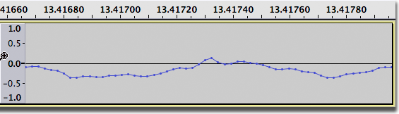
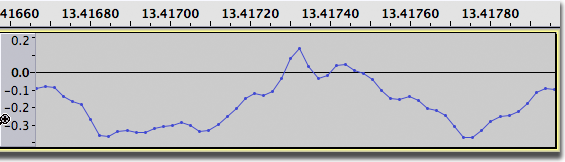
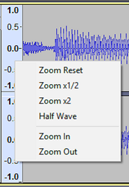
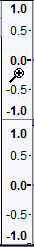
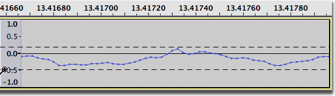
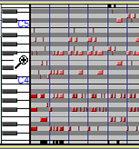

Vertical Zooming
.
- Vertical Zooming works in Audio Tracksaudio tracks regardless of the view type - and works in note tracks.
- Vertical Zooming is not available for label tracks or time tracks.
| A useful alternative to Vertical Zooming can be to enlarge the track size vertically by changing the height of the track, see Changing the track display ion the Audio Tracks page. |
Contents
- Vertical Zooming
- Simple mode vertical zooming with the Vertical Scale context menu
- Advanced mode vertical zooming with the Vertical Scale magnifiers
- Vertical Zooming in Spectrogram view
- Vertical Zooming in Note Tracks
Vertical Zooming
Vertical zooming can be useful on occasions. You can always zoom vertically, regardless of which of the tools in Tools Toolbar is selected.
- The pointer changed to a magnifying glass (in advanced mode only), indicating that you can zoom vertically.
- 
- After clicking to zoom vertically, vertical detail is enhanced
- :
 The Vertical Scale (the vertical ruler to the left of the waveform can be used to control the vertical zoom level. Right-click in the Vertical Scale will bring up a dropdown context menu enabling: - Zoom Reset - resets the waveform to normal zoom level
- Zoom x 1/2 - zooms out vertically to half normal zoom level
- Zoom x 2 - zooms in vertically to twice normal zoom level
- Half wave - displays the top half of the waveform only, can be useful when working with many tracks
- Zoom In - zooms in vertically, centered on where you click in the vertical scale for the menu. It can be used repeatedly.
- Zoom Out - zooms out vertically, centered on where you click in the vertical scale for the menu. It can be used repeatedly.

- Hold Shift and rotate the mouse wheel to scroll up and down at the same zoom level, using the same visible range of amplitude or frequency.
- Hold Ctrl (⌘ on Mac) and rotate the mouse wheel to zoom in or out at the mouse pointer's position.
- In Waveform (dB) view view only - Hold Ctrl (⌘ on Mac)and Shift and rotate the mouse wheel to vary the lower dB limit of the scale at the same zoom level, irrespective of the limit set at "Meter dB range" in Tracks Preferences. This only takes effect if the horizontal midline between positive and negative samples is visible, so has no effect if you are zoomed in on a portion of the vertical range that does not include the midline.
Advanced mode vertical zooming with the Vertical Scale magnifiers
You can turn on advanced mode for vertical zooming with the command. Alternatively you can set this in and selecting Advanced vertical zooming. This will enable you to use left-click gestures in the Vertical Scale to control zooming (this is in addition to the Simple mode commands as above).
 With advanced mode activated, when the mouse pointer is over the scale it changes to a magnify icon . - Left-click in the Vertical Scale for any Waveform or Spectrogram view to zoom in. The range displayed on the scale will be centered at the value you clicked at.
- Left-click and drag a region up or down then release to zoom into that region. You can press Esc to cancel the zoom operation if you commence a drag by mistake.
- Hold Shift and left-click to zoom out progressively. When the Shift key is held down the plus sign on the magnify icon changes to a minus magnify icon .
- Hold Shift and right-click to reset the waveform to normal zoom level
Using these methods you can zoom out in the final step from a range of 1.0 to -1.0 to 2.0 to -2.0 on the linear waveform scale (or to +6 dB when in Waveform (dB) view). This allows you when in 32-bit float sample format to see any samples that are above the 0 dB clipping level.
- Right-click in the Vertical scale will bring up the dropdown context menu as above.
Example of click and drag in the Vertical Scale in advanced mode:Click once and hold down the mouse button, then drag to select a vertical region:
- 
When you release the mouse button, exactly the range you selected will be zoomed in so as to fit vertically inside the track height:
Vertical Zooming in Spectrogram view
Vertical zooming operates similarly in Spectrogram view, where you can use the context menu and the magnifiers when Advanced Vertical Zooming is enabled in .
Note though that the Vertical Scale context menu when in Spectrogram view has different menu items.
- Below the line are the vertical zoom commands (these differ from the vertical zoom commands in waveform view):
- Zoom Reset: resets the vertical zoom level to the default
- Zoom to Fit: vertically fits the spectrogram to the available space
- Zoom In: zooms in vertically, centered on where you click in the vertical scale for the menu. It can be used repeatedly
- Zoom Out: zooms out vertically, centered on where you click in the vertical scale for the menu. It can be used repeatedly
Above the line are commands to change the spectrogram view type (these are not zoom commands).
Vertical Zooming in Note Tracks
For Note Tracks the Vertical Scale displays note pitches like a piano's keys, ranging from the lowest to the highest possible MIDI notes (C -1 to G 9). Each octave is labeled at C (and the notes above are in that octave).
Simple

A Note Track's Vertical Scale also has a context menu accressed by right clicking in the Vertical Scale: - Zoom Reset - zoom out in one step to show the entire range of notes (from C -1 to G 9).
- Zoom In - zooms in vertically, centered on where you click in the vertical scale for the menu. It can be used repeatedly.
- Zoom Out - zooms out vertically, centered on where you click in the vertical scale for the menu. It can be used repeatedly..
Advanced
 With advanced mode activated, when the mouse pointer is over the scale it changes to a magnify icon . - Left-click in the Vertical Scale to zoom in. The range displayed on the scale will be centered at the value you clicked at. Left-click and drag a region up or down then release to zoom into that region. You can press Esc to cancel the zoom operation if you commence a drag by mistake.
- Hold Shift and left-click to zoom out progressively. When the Shift key is held down the plus sign on the magnify icon changes to a minus icon.
- Hold Shift and rotate the mouse wheel to scroll up and down at the same zoom level, using the same visible range.
- Hold Ctrl and rotate the mouse wheel to zoom in or out at the mouse pointer's position.
- Hold Shift and right-click to zoom out in one step to show the entire range of notes (from C -1 to G 9).
Observe carefully the little black marks above and below the colored notes in both images. These indicate that there are additional notes in the Note Track above and below them. More notes can me made visible by using Vertical Zooming.